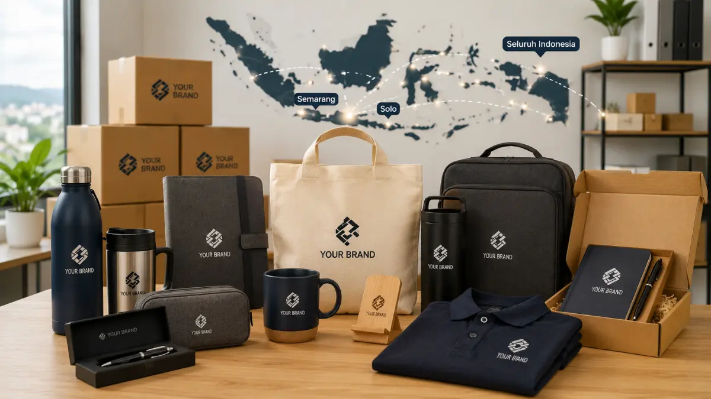

Mengapa Lokasi Produksi dan Pengiriman Penting dalam Memesan Merchandise Kantor Custom?
Lokasi produksi dan jangkauan pengiriman menjadi pertimbangan penting karena berkaitan langsung dengan estimasi waktu pengerjaan dan biaya logistik.
Perusahaan yang berada di luar kota pusat produksi tetap membutuhkan kepastian bahwa barang akan sampai tepat waktu, terutama jika merchandise dibutuhkan untuk acara dengan tanggal yang sudah ditentukan.
Selain itu, pemahaman terhadap karakteristik wilayah, seperti kebiasaan bisnis lokal atau preferensi produk di daerah tertentu, juga membantu memberikan rekomendasi merchandise yang lebih relevan bagi perusahaan setempat.
Layanan Merchandise Kantor Custom di Semarang
Semarang sebagai salah satu kota dagang dan pelabuhan utama di Jawa Tengah memiliki banyak perusahaan, mulai dari sektor logistik, manufaktur, hingga jasa, yang membutuhkan merchandise untuk kebutuhan internal maupun promosi kepada mitra bisnis.
Layanan merchandise kantor custom di Semarang umumnya mencakup produk-produk fungsional seperti alat tulis, tumbler, dan seragam kerja, yang banyak digunakan untuk kebutuhan operasional maupun acara perusahaan.
Kedekatan dengan jalur distribusi dan pelabuhan juga memudahkan proses pengiriman bahan baku maupun distribusi hasil produksi ke berbagai wilayah di sekitar Semarang.
Layanan Merchandise Kantor Custom di Solo
Solo, atau Surakarta, dikenal memiliki tradisi kuat di bidang tekstil dan kerajinan, termasuk batik, yang turut memengaruhi ketersediaan bahan dan keahlian produksi di wilayah tersebut.
Hal ini memberikan keuntungan tersendiri bagi perusahaan yang membutuhkan merchandise berbahan kain, seperti kaos, tote bag, atau seragam kerja custom, karena dukungan sumber daya produksi tekstil yang cukup mapan di daerah ini.
Perusahaan di Solo maupun sekitarnya dapat memanfaatkan kedekatan wilayah untuk mempercepat proses konsultasi desain maupun pengecekan contoh produk sebelum produksi massal dilakukan.

Jangkauan Pengiriman ke Seluruh Indonesia
Selain melayani wilayah Semarang dan Solo, layanan merchandise kantor custom umumnya juga menjangkau pengiriman ke seluruh Indonesia melalui jasa ekspedisi.
Hal ini memungkinkan perusahaan di kota lain, baik di Pulau Jawa maupun luar Jawa, tetap dapat memesan merchandise custom tanpa harus melakukan pertemuan tatap muka secara langsung.
Proses konsultasi, pemilihan desain, dan persetujuan mock-up dapat dilakukan secara daring, sehingga jarak antara lokasi perusahaan dan lokasi produksi tidak lagi menjadi hambatan utama dalam pemesanan merchandise kantor custom.
"Karakteristik masing-masing wilayah, seperti basis industri tekstil di Solo atau posisi strategis Semarang sebagai kota dagang, dapat dimanfaatkan untuk mendukung proses produksi."
— Anggun Tri Stya, Penulis Merchandise Kantor
Pilihan Produk yang Tersedia untuk Setiap Wilayah
Pilihan produk merchandise kantor custom pada dasarnya dapat disesuaikan dengan kebutuhan perusahaan di wilayah mana pun, baik itu alat tulis, perlengkapan minum, tas, maupun seragam kerja.
Namun demikian, ketersediaan bahan baku tertentu, seperti kain khas daerah atau kapasitas produksi lokal, terkadang memengaruhi pilihan produk yang paling efisien diproduksi di wilayah tertentu, misalnya produk berbahan tekstil yang lebih optimal diproduksi di wilayah dengan basis industri tekstil yang kuat seperti Solo.
Perusahaan di berbagai wilayah tetap dapat berkonsultasi mengenai jenis produk yang paling sesuai dengan kebutuhan dan anggaran, disesuaikan dengan kapasitas produksi yang tersedia untuk wilayah masing-masing.

Kesimpulan
Layanan merchandise kantor custom yang menjangkau Semarang, Solo, dan seluruh Indonesia memberikan kemudahan bagi perusahaan di berbagai wilayah untuk tetap dapat memenuhi kebutuhan branding dan operasional mereka. Karakteristik masing-masing wilayah, seperti basis industri tekstil di Solo atau posisi strategis Semarang sebagai kota dagang, dapat dimanfaatkan untuk mendukung proses produksi, sementara jangkauan pengiriman ke seluruh Indonesia memastikan perusahaan di luar kedua kota tersebut tetap dapat memesan merchandise custom sesuai kebutuhan mereka.